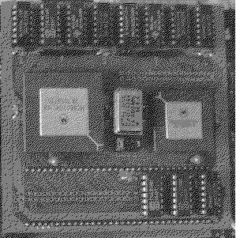
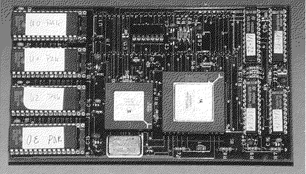

Previous
Next
TOC
Die PAK68 der Zeitschrift c't

CPU Takt 16MHz (MC68020 CPU und MC68881)
Mittels zusätzlichen Quarzoszillators und umsetzen eines Jumper kann
die FPU schneller getaktet werden
Modifiziertes TOS 1.04 im Lieferumfang
FPU (MC68881) kann nachgerüstet werden
Die PAK68/2 der Zeitschrift c't

CPU Takt 16MHz (MC68020 CPU)
Modifiziertes TOS 1.04 im Lieferumfang
FPU (MC68882) kann nachgerüstet werden
weiterblättern
Kapitel Die Beschleunigerboards, Seite 4